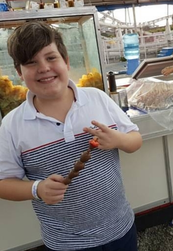

Olá! Meu nome é Victor Schneider do Vale e sim, eu sou extamente a mesma pessoa da foto inicial. Bom... nem tanto...
Tudo bem! Confesso: ele é meu primo, hehehe! Então, vamos recomeçar "do começo":

Olá! Meu nome é Victor Schneider do Vale e agora, de fato, esse sou EU (bonitão, né?)!!! Tenho 15 anos de idade e, no momento, estou tentando não surtar enquanto curso o primeiro ano de Informática no CEFET-MG. Moro em Contagem desde os meus 7 anos e, a única vantagem deste ERE, foi não ter que pegar mais ônibus em plena 5 horas da manhã!
As informações chatas detalhadas estão logo à seguir. Boa sorte!
Eu nasci no dia 16/09/2004, "exatamente" às 12:55 de uma belíssima quinta-feira, na gloriosa capital mineira, Belo Horizonte. Minha maravilhosa e digníssima mãe se chama Denize Schneider e meu pai Alexandre Soares do Vale. Tenho uma irmã chamada Sophia Schneider do Vale. Atualmente, moramos, minha mãe, minha irmã e eu, no bairro Fonte grande, perto do Centro da minha cidade. Sempre fui uma criança feliz e muito tranquila de se lidar, o que me leva a uma profunda dúvida existencial: o que bulhufas minha mãe injetava na minha mamadeira???
Como qualquer criança normal, eu também tive minha fase "gordinho mimado", mas, como o tempo cura e faz milagres, hoje eu não sou mais...... mimado.
Frequentei um total de quatro escolas durante minha infância, sendo elas:
Para começar a falar sobre meus hobbies, gostaria de esclarecer que esse é o tema mais amplo possível e que são muitas informações à serem tabeladas. Portanto, eu juro solenimente me empenhar ao máximo para que essa seção fique completa e organizada (ou não).
Por mais que fosse uma criança muito tranquila, sempre amei qualquer tipo de atividade física e correria. Não podia ver meio metro quadrado livre que improvisava uma bola com o primeiro material que visse: desde papel higiênico com elásticos, a folhetos de igreja com durex. Sempre joguei futebol, mas, no 8° ano, descobri que amo praticar o Handebol. Meu time do coração é o Cruzeiro Esporte Clube e eu estou com 18 tipos de depressões vendo o estado em que meu time se encontra.

Assistir séries sempre foi (e ainda é) um dos meus hobbies favoritos. Infelizmente eu tenho a maravilhosa mania de começar 400 séries e não acabar nenhuma por pura preguiça, mas juro que tento assistir o máximo que consigo. Minhas séries favoritas são:
É com muita alegria no coração que digo à vocês que ainda não fui totalmente corrompido pela doença chamada Informática. Dito isso, não tive interesse em assistir nenhum anime além de Naruto (eu ainda estou devendo o Shippudden). Mas, para a felicidade de toda uma respeitosa geração de InfBoys, trago à vocês minha lista de lutas favoritas de Naruto Clássico:
Atualmente, jogar vídeo games, definitivamente, se tornou o melhor hobbie de todos os tempos!Qualquer momento livre eu estou jogandando uma ranked de Valorant (Valorant é um FPS online, onde seu objetivo é plantar ou desarmar a bomba junto do seu time). Confesso que chorei com meu jogo favorito, e, falando nele, aqui vai minha lista atualizada com meus jogos favoritos (sim, todos são exclusivos de PS4, e ainda da Naughty Dog... me julguem!):
Se você leu este site totalmente interessante até aqui, parabéns! Você é uma pessoa persistente e incrivelmente atoa! (Isso não é um quiz de Facebook).
Obrigado pela sua atenção! Agora fique com esse clipe de cachorros fofinhos: